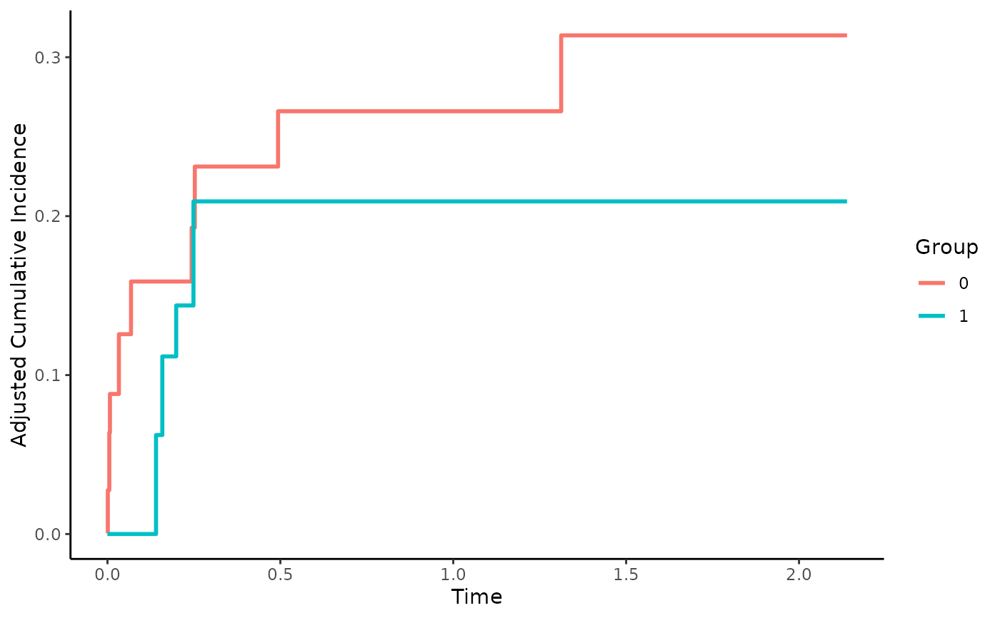

Inverse Probability of Treatment Weighted CIFs
cif_iptw.RdThis page explains the details of estimating inverse probability of treatment weighted cumulative incidence functions in a competing risks setting (method="iptw" in the adjustedcif function). All regular arguments of the adjustedcif function can be used. Additionally, the treatment_model argument has to be specified in the adjustedcif call. Further arguments specific to this method are listed below.
Arguments
- treatment_model
[required] Must be a
glmormultinommodel object withvariableas response variable.- censoring_model
Either
NULL(default) to make no adjustments for dependent censoring, or acoxphobject. See?atefor more details.- verbose
Whether to print estimation information of the
atefunction in the riskRegression package. Defaults toFALSE.- ...
Further arguments passed to
ate.
Details
Type of Adjustment: Requires a model describing the treatment assignment mechanism. This must be either a
glmor amultinomobject.Doubly-Robust: Estimates are not Doubly-Robust.
Categorical groups: Any number of levels in
variableare allowed. Must be a factor variable.Approximate Variance: Calculations to approximate the variance and confidence intervals are available.
Allowed Time Values: Allows both continuous and integer time.
Bounded Estimates: Estimates are guaranteed to be bounded in the 0 to 1 probability range.
Monotone Function: Estimates are guaranteed to be monotone.
Dependencies: This method relies on the riskRegression package
This method works by modeling the treatment assignment mechanism. Adjusted CIFs are calculated by first estimating appropriate case-weights for each observation in data. Those weights are used in a weighted version of the Aalen-Johansen estimator. If the weights are correctly estimated the resulting estimates will be unbiased. A more detailed description can be found in Neumann et al. (2016) and Choi et al. (2019). By utilizing another set of weights, this function can also correct the estimates for covariate-dependent censoring (Ozenne et al. 2020). Asymptotic variance calculations are based on the efficient influence curve.
Internally, this function simply calls the ate function with appropriate arguments. The three-dot syntax can be used to pass further arguments to that function. It is however recommended to use the ate function directly when specific settings are required.
Value
Adds the following additional objects to the output of the adjustedcif function:
ate_object: The object returned by theatefunction.
References
Anke Neumann and Cécile Billionnet (2016). "Covariate Adjustment of Cumulative Incidence Functions for Competing Risks Data Using Inverse Probability of Treatment Weighting". In: Computer Methods and Programs in Biomedicine 129, pp. 63-70
Sangbum Choi, Chaewon Kim, Hua Zhong, Eun-Seok Ryu, and Sung Won Han (2019). "Adjusted-Crude-Incidence Analysis of Multiple Treatments and Unbalanced Samples on Competing Risks". In: Statistics and Its Inference 12, pp. 423-437
Brice Maxime Hugues Ozenne, Thomas Harder Scheike, and Laila Stærk (2020). "On the Estimation of Average Treatment Effects with Right-Censored Time to Event Outcome and Competing Risks". In: Biometrical Journal 62, pp. 751-763
Author
The wrapper function was written by Robin Denz, the ate function itself was written by other people. See ?ate for more information.
Examples
library(adjustedCurves)
if (requireNamespace("riskRegression")) {
set.seed(42)
# simulate some data as example
sim_dat <- sim_confounded_crisk(n=50, max_t=5)
sim_dat$group <- as.factor(sim_dat$group)
# estimate a treatment assignment model
glm_mod <- glm(group ~ x1 + x3 + x5 + x6, data=sim_dat, family="binomial")
# use it to calculate adjusted CIFs
adjcif <- adjustedcif(data=sim_dat,
variable="group",
ev_time="time",
event="event",
cause=1,
method="iptw",
treatment_model=glm_mod)
plot(adjcif)
}
#> Warning: Rare event
#> Ignoring unknown labels:
#> • linetype : "Group"
#> • fill : "Group"
